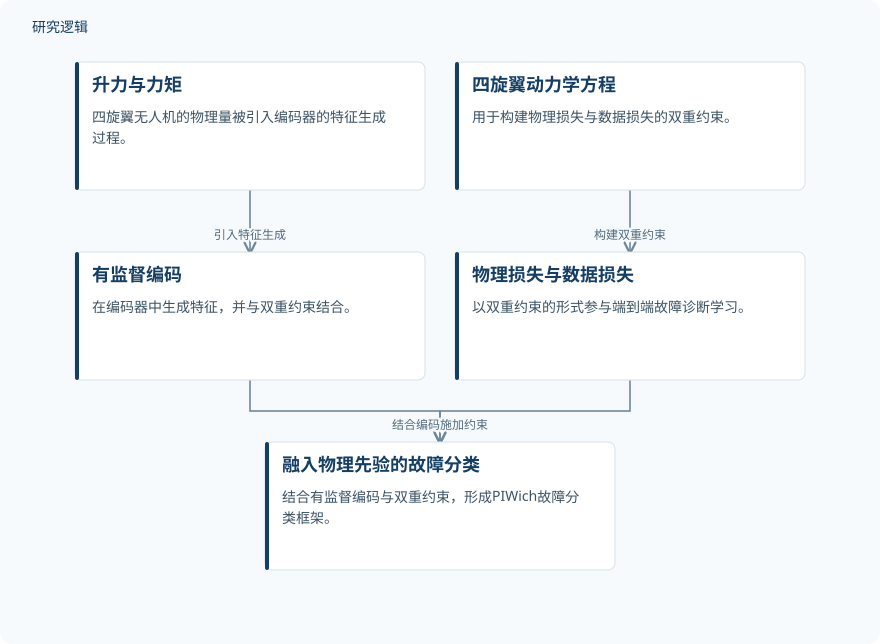

摘要解读
PIWich：通过物理信息端到端学习提升不平衡数据下的四旋翼无人机故障诊断
PIWich: Enhancing Quadrotor UAV Fault Diagnosis Under Imbalanced Data via Physics-Informed End-to-End Learning
解读更新 2026-11-10 15:21 · 依据公开摘要整理，未核验全文细节
四旋翼无人机的故障数据类别不均衡时，诊断模型如何兼顾多数类与少数类？PIWich尝试将升力、力矩和动力学约束融入端到端学习，为理解物理先验如何辅助故障诊断提供了一个具体案例。
文章目录
故障诊断面临模型依赖与数据依赖
故障诊断关系到无人机的安全运行与维护。摘要指出，两类主流方法各有局限：模型驱动方法依赖精确物理模型，适用范围较窄、研究成本较高；数据驱动方法则高度依赖大规模数据，在小样本和类别不均衡场景下稳定性不足。
这项研究关注的是：如何在数据驱动的特征学习中补充物理约束，改善模型的泛化能力。其切入点不是单纯增加数据，而是让四旋翼无人机的物理先验参与故障分类。
从编码特征到双重损失引入物理先验
作者提出物理信息端到端故障诊断网络PIWich。首先，网络在编码器生成特征的过程中引入四旋翼无人机的升力与力矩，将这些物理量纳入特征学习环节。
随后，PIWich基于四旋翼动力学方程构建物理损失与数据损失的双重约束。通过结合有监督编码和双重约束，网络将物理先验融入故障分类框架。摘要明确描述了这一方法关系，但没有展开具体网络结构与损失表达式。
依据摘要整理的PIWich方法关系


仅概括摘要明确描述的特征生成、双重约束与故障分类关系，不代表论文原图或完整网络结构。
下载 SVG图示关系说明
实线表示相邻阶段的信息流，虚线表示跨阶段联系或反馈。
升力与力矩 → 有监督编码：引入特征生成；四旋翼动力学方程 → 物理损失与数据损失：构建双重约束；有监督编码 → 融入物理先验的故障分类：参与故障分类；物理损失与数据损失 → 融入物理先验的故障分类：结合编码施加约束
不均衡数据上的共同物理特征学习
摘要报告，作者在公开RflyMAD数据集上开展了对比实验。结果表明，PIWich能够有效学习多数类与少数类之间共有的物理特征，并显著改善数据不均衡场景下的故障诊断性能。
这一结果将特征学习与诊断表现联系起来：物理先验不仅是方法的设计出发点，也对应着摘要所报告的跨类别共同特征学习能力。不过，摘要没有给出具体性能指标或提升幅度，无法据此量化收益。
验证范围仍需结合全文判断
当前资料仅支持摘要层面的解读。摘要未报告样本规模、故障类别构成、不均衡程度、数据划分和比较方法，因此尚不能判断改进在不同类别及不同数据条件下是否一致，也不能评估比较设置的充分性。
摘要明确提及的验证来自RflyMAD数据集，未交代跨数据集、跨机型或实际部署条件下的验证情况。不能由此认定论文没有开展相关工作，也不宜把当前结果直接推广为普遍适用的工程效果。
阅读启发：追问物理约束如何帮助少数类
阅读启发：后续阅读可重点关注升力与力矩如何进入编码器，以及物理损失与数据损失如何共同作用于分类学习。对于智能运维，更值得核对的是各类别的诊断表现及其与物理特征学习的关系，而不只是总体指标是否提高。
以上为本站阅读启发与建议，不是论文已验证的结论。